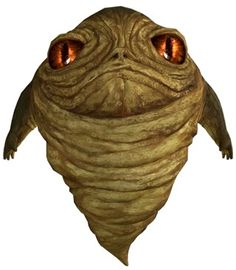

Biographie fictive
Jabba est le fils du célèbre Zorba le Hutt et, comme lui, il est le chef gangster d'une grande organisation criminelle : le Clan Desilijic des Hutts. Il est le père de Rotta le Hutt qui sera enlevé dans le film Star Wars: The Clone Wars par les séparatistes, mais aussi le neveu de Jilliac le/la Hutt, dont il prit la place après son décès à la tête du clan Desilijic, environ un an avant la bataille de Yavin.
Jabba le Hutt vécut pendant 604 ans (de sa naissance en 600 avant la bataille de Yavin à l'an 4. Son espèce vit habituellement un millénaire environ). Issu de la terrible famille Hutt, une organisation criminelle puissante, il fut responsable de nombreux intérêts du clan Desilijic, avant d'en prendre totalement le contrôle en -1, à la mort de son grand-oncle Jiliac qui en était le patriarche. Célèbre pour sa cruauté, son sadisme, son machiavélisme et ses nombreux vices, Jabba le Hutt finit par perdre la vie, tué par la princesse Leia Organa, pour avoir voulu régler ses comptes avec le contrebandier Han Solo.
Jeunesse
Jabba Desilijic Tiure naît sur la planète Nal Hutta en 600 avant la bataille de Yavin4, de Zorba le Hutt, l'un des gangsters Hutt (une puissante et célèbre famille criminelle, composée de deux clans principaux, les Desilijic et les Besadii, aux pouvoirs importants).
Dès l'instant où il rampa hors de la poche ventrale de son père (les Hutts sont une espèce à longue durée de vie mais ils doivent passer leurs cinquante premières années dans une poche, spécialement prévue à cet effet, d'un de leurs parents), celui-ci le forma et le prépara à l'art d'être gangster. Il apparut rapidement que Jabba excellait dans les pots-de-vin, les mensonges, les intrigues et la création d'arnaques en tous genres, brillantes et complexes. Son grand-oncle Jiliac le Hutt, dirigeant et patriarche du clan Desilijic, fut lui aussi très impressionné par les qualités montrées par Jabba et l'associa très vite à la gestion des affaires du clan, généralement depuis le palais de Jiliac, situé sur la planète Nar Shaddaa.
En récompense de ses talents, Zorba et Jiliac lui donnèrent plusieurs propriétés sur la planète de Tatooine, située dans la Bordure extérieure, où Jabba finit par s'installer durablement, quelques décennies avant la bataille de Yavin, et d'où il régenta le vaste empire criminel qu'il commençait à se constituer.
Jabba sur Tatooine
Il vit entre une maison à Mos Eisley et un ancien monastère sur la planète Tatooine (proche de la bordure sud-ouest de la mer de Dunes) d'où il règne comme un parrain de la pègre galactique. Les gardes du palais sont essentiellement composés de gamorréens qui le protègent contre toute attaque ennemie. Sur son ordre, Jango Fett, le chasseur de primes, finira par éliminer Gardulla la Hutt, et deviendra, après une lutte mortelle durant des décennies contre sa rivale Besadji en -26 avant BY, le maitre absolu de Tatooine et le plus puissant hutt de la bordure extérieure. Par la suite Jabba à l'apogée de sa puissance caresse l'idée de devenir le chef de son kaadjick, afin d'unifier sous sa bannière toutes les familles hutt et ainsi devenir le criminel le plus puissant de la galaxie. Dans son palais, règne la débauche, et les orgies dont raffole le hutt et sa cour hétéroclite, dont de nombreux membres, étant des crapules de la pire espèce, cherchent à le renverser, sans succès. Raffolant de spectacles musicaux et ayant un puissant appétit sexuel, comme de nombreux hutts, il fait jouer de nombreux groupes de musique, dont le Max Rebo B, dans son palais et les danseuses esclaves dont il est friand sont présentes pour satisfaire ses vices. Parmi elles, on compte O'oola Tarkona qu'il balancera en pâture à son rancor, à la suite d'un refus, et, brièvement, Leia Organa, qui causera sa perte.
Jabba et la politique
Jabba n'hésite pas à se débarrasser de quelqu'un en le tuant s'il n'obtient pas ce qu'il veut de sa part, on donnera pour exemple l'exécution d'une de ses danseuses dans l'épisode VI, dévorée par le Rancor. Il est presque toujours accompagné de sa cour dont Salacious Crumb, Bib Fortuna et le Max Rebo Band. Jabba est en effet rarement aperçu hors d'un évènement festif comme la Course de la Boonta, ou d'un contexte où sont présents des musiciens et des danseurs. Ainsi, il reçoit dans son palais de Tatooine dans une salle où sont présents plusieurs esclaves chargés de le divertir en permanence. Lorsqu'il organise une exécution, il ne se déplace presque jamais sans sa cour et les divertissements allant avec.
Mort sur Tatooine
Il meurt sur Tatooine des mains de Leia Organa, qui l'étrangle grâce à ses chaînes de prisonnière, malgré les nombreux avertissements du chevalier Jedi, Luke Skywalker disant qu'il allait mourir. Ce qui fait d'ailleurs remarquer qu'il n'a pas beaucoup de force dans les bras malgré sa corpulence. Cette mort révolta presque toute une galaxie.